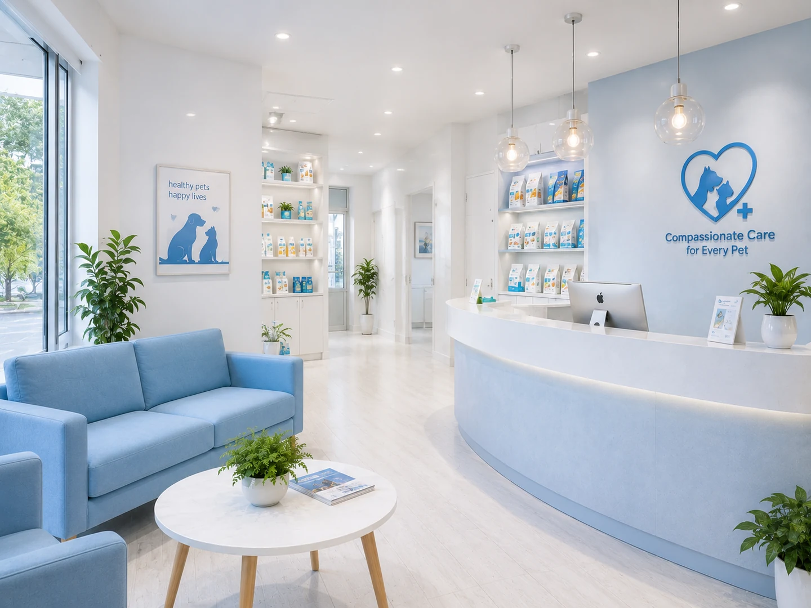
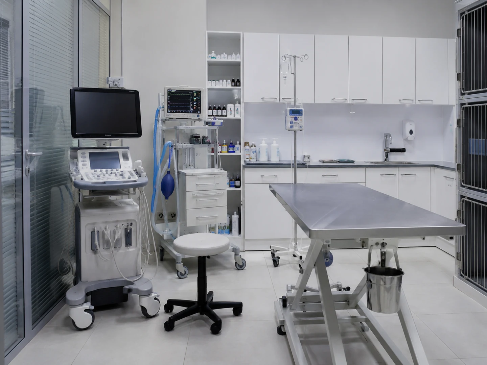
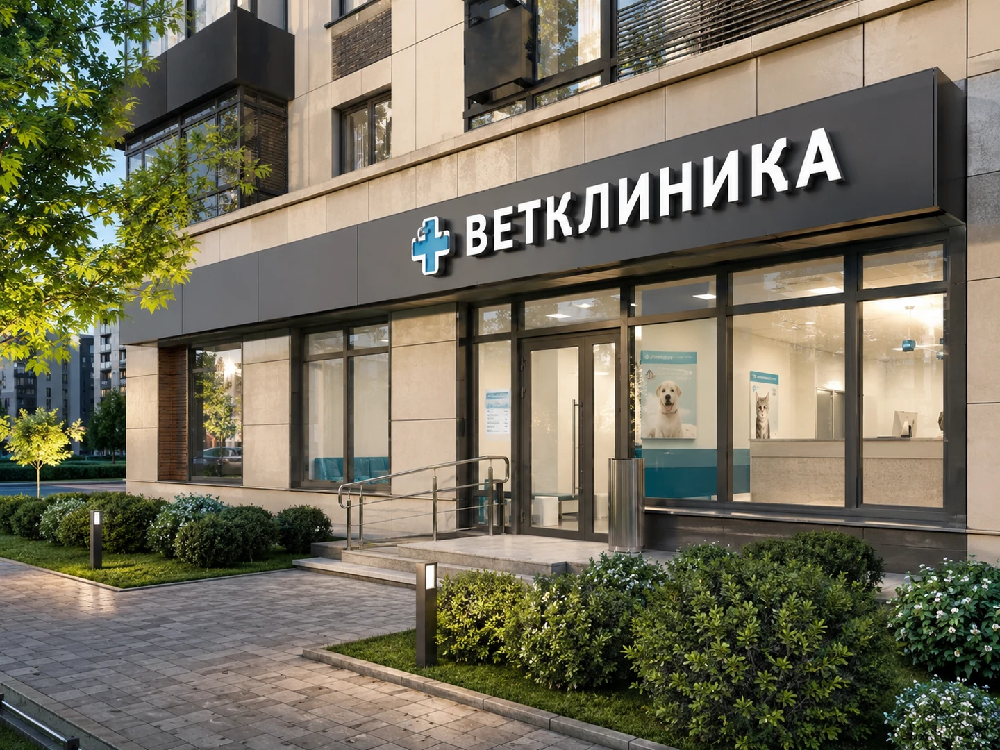
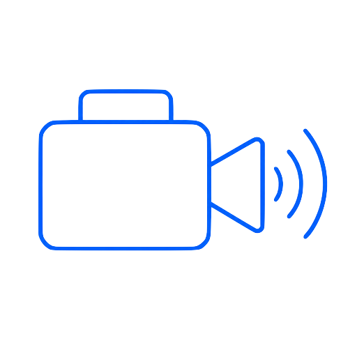

Подбор клиники
Найдите клинику и ближайший подтверждаемый слот
Как в медицинских агрегаторах: сначала дата, цена, формат подтверждения и доступные окна, потом детали клиники.
Сравнить варианты
ВетКлиника+
★ 4,8 · 128 отзывов
ул. Ленина, 10 · 2,3 км · 7 минут на машине
24/7ТерапевтУЗИРентгенСтраховка
ВетПрофи
★ 4,6 · 91 отзыв
ул. Мира, 22 · 3,1 км · 11 минут
ТерапияХирургияДокументы проверены
Здоровый питомец
★ 4,5 · 76 отзывов
пр. Победы, 3 · 4,0 км · 14 минут
АнализыВакцинацияПриём сегодня
Как читать статусы слотов
Мгновенное подтверждениеКлиника уже открыла время для онлайн-записи.Ручное подтверждениеКлиника должна ответить; до этого не выезжайте.По заявкеВремя предложено, но требует проверки администратором.
Decision comparison · Safety / Value
Сравнение клиник для Барни
Не просто «где ближе», а где выше шанс безопасного и понятного визита: подтверждаемость слота, нужное оборудование, цена, отзывы по похожим случаям и прозрачность назначений.
Выбрать время
Рекомендация VetHelpБарни · корги · аллергия на лидокаинНужен терапевт сегодня
Лучший баланс безопасности и предсказуемости — ВетКлиника+
Причина: время подтверждено клиникой 8 минут назад, доступны рентген и лаборатория, оценка качества 92/100 по похожим случаям, цена визита объяснена до записи.
Можно ли ехать?
Пока нет — это выбранное время. Ехать можно только после статуса «Клиника подтвердила запись».
Источник: VetHelp Booking · обновлено сейчас · следующий шаг: отправить заявку
UAT decision screen
Сравните 3 варианта перед записью
Выбор строится по safety/value: слот, подтверждение, цена, оборудование, очередь, отзывы по похожим случаям и свежесть данных.
Рекомендуем
ВетКлиника+
- Время
- Сегодня 12:00 · обновлено 8 мин назад
- Цена
- Первичный приём 1 200 ₽ · состав объяснён
- Возможности
- Рентген, УЗИ, лаборатория, стационар рядом
- Ожидание
- 8–12 минут по подтверждённой записи
Выбрать ВетКлиника+
Запасной сегодня
ВетПрофи
- Слот
- Сегодня 15:30 · ручное подтверждение
- Цена
- 1 400 ₽ · диагностика выше среднего
- Safety
- Терапевт и УЗИ, рентген по направлению
- Ожидание
- 18–25 минут, бывают срочные вставки
Сравнить детали
Только планово
Здоровый питомец
- Слот
- Завтра 10:00 · данные устарели 2 ч
- Цена
- 1 000 ₽ · состав нужно уточнить
- Safety
- Подходит для вакцинации, не для кашля сегодня
- Ожидание
- Недостаточно данных по очередям
Оставить как запасной
Backend note: comparison должен строиться из публичного catalog read model, quality profile, slot freshness и verified capabilities; frontend не вычисляет финальный статус записи.
ВетКлиника+
92
Сегодня 12:00 · подтверждено клиникой · 2,3 км
- Safety: терапевт, рентген, лаборатория, стационар рядом.
- Value: 1 200 ₽; доп. диагностика только после согласия.
- Очередь: обычно 8–12 минут по подтверждённой записи.
- Отзывы: 42 похожих случая кашля/возрастных собак.
Выбрать ВетКлиника+
ВетПрофи
84
Сегодня 15:30 · ручное подтверждение · 3,1 км
- Safety: терапевт и УЗИ, рентген по направлению.
- Value: 1 400 ₽; средний чек по похожим случаям выше.
- Очередь: 18–25 минут, возможны срочные между слотами.
- Отзывы: сильные по объяснениям, слабее по ожиданию.
Посмотреть
Здоровый питомец
78
Завтра 10:00 · stale 2 ч · 1,8 км
- Safety: подходит для плановой вакцинации, не для кашля сегодня.
- Value: 1 000 ₽; состав визита нужно уточнить.
- Очередь: данных мало, подтверждение обязательно.
- Отзывы: хорошие по вакцинации, мало похожих кейсов.
Как считается trust-score
Показать методику оценки
40%Проверенные отзывы после визита за последние 12 месяцев.
20%Приём по времени: подтверждённые записи и фактическая задержка.
15%Прозрачность цены: совпадение ожидаемой и фактической суммы.
15%Объяснение назначений и согласование доп. услуг.
10%Повторные обращения и отсутствие частых отмен/альтернатив.
Проверенный визит — запись, подтверждённая backend-статусом VetHelp и закрытая клиникой после приёма. Клиника не может вручную повысить trust-score.
← К выбору клиники
Прозрачная ценаПервичный прием терапевта — 1 200 ₽
Вес Барни 11,2 кг. Для процедур ниже применяется категория 10–20 кг.
Что входит- первичный осмотр;
- сбор анамнеза;
- рекомендации;
- план дальнейших действий.
Может быть дополнительно- анализы;
- УЗИ;
- рентген;
- препараты;
- повторный приём.
Кто принимает решение- врач предлагает;
- владелец подтверждает;
- без согласия не добавляется.
Чистка с седацией: 5 800 ₽Операция soft tissue: 12 600 ₽Категория: 10–20 кг
Backend note: согласование доп. услуг должно быть отдельной командой consent-to-extra-service с audit trail, а не локальным UI-переключателем.
Consent flow
Дополнительные услуги — только после согласия владельца
Закрываем страх навязывания: врач объясняет причину, показывает цену для веса Барни 11,2 кг, владелец подтверждает или отказывается.
УЗИ брюшной полостиПричина: исключить воспаление и осложнения.2 400 ₽ · категория 10–20 кг
Рентген грудной клеткиПричина: кашель у корги, нужно исключить бронхит и инородное тело.1 900 ₽
Препараты после осмотраНазначаются только после очного осмотра и проверки аллергий.По факту назначения
Решение ещё не принято. Ничего не добавляется к чеку без согласия.
Backend note: каждая услуга создаёт consent command, audit event и ledger draft; итоговая сумма появляется только после server-authoritative confirmation.
Современная ветеринарная клиника рядом с вамиПанорамные окна, зона ожидания и диагностическое отделение. Информация о доступности показывается ниже как отдельный серверный статус.

Зона ожидания
Смотровой кабинет
Цифровая диагностикаВход в клинику
✓ Лицензия проверена✓ Данные обновлены сегодня★ 4,8 · 128 отзывов
Принимает сейчасПодтверждённые возможности
24/7Срочный приёмСтатус обновлён 8 минут назад
ВерифицированоСтационарНаблюдение после процедур
ОборудованиеУЗИ и цифровой рентгенДля собак и кошек
КомандаХирургияПо предварительному согласованию
Доступность, возможности и экстренный статус должны приходить из карточки клиники и capability profile, а не вычисляться интерфейсом.
Подходит Барни
Почему этой клинике можно доверить первый визит
Для владельца важны не только фото и рейтинг, а проверяемые доказательства: кто подтвердил слот, какие возможности доступны сейчас, что входит в цену и как клиника отвечает на заявки.
Цена1 200 ₽ за консультациюОсмотр и рекомендации. Анализы, УЗИ, рентген и процедуры — только после отдельного согласия владельца.
ПодтверждениеОтвет обычно до 15 минутПока клиника не подтвердила слот, это заявка, а не финальная запись.
Похожие случаи246 отзывов по терапииВладельцы отмечают понятные объяснения после первичного осмотра и аккуратный план диагностики.
ВозможностиРентген, УЗИ, стационарCapability profile обновлён 8 минут назад и должен приходить с backend.
Trust / Price / Reviews
Доверие к клинике: цена, доказательства и похожие случаи
Этот блок закрывает главный страх владельца: «меня примут вовремя, объяснят назначения и не добавят услуги без согласия».
1 200 ₽
Что входит в первичный приём
- Осмотр терапевта и сбор анамнеза.
- Оценка срочности и безопасный следующий шаг.
- Рекомендации по наблюдению и подготовке документов.
246 проверенных отзывов
Похожие случаи владельцев
Корги, кашель«Объяснили, зачем нужен рентген, сначала согласовали стоимость. Ответ клиники пришёл за 9 минут.»Проверенный визит · июнь 2026
Кошка, вакцинация«Приняли по времени, администратор заранее попросил паспорт и старые отметки.»Проверенный визит · май 2026
Источник данных
Статус слотов и возможностей
- Слоты
- VetManager API · обновлено 8 минут назад
- Возможности
- Capability profile · подтверждено клиникой сегодня
- Отзывы
- Только после фактического визита через VetHelp
Проверенные отзывы после визита
Доказательства по похожим случаям
Отзывы разделены по типу обращения и показывают не только эмоцию, а операционные метрики: очередь, цена, объяснение назначений и повторный визит.
Объяснение назначений94%94%
Очередь по записи86%8 мин
Прозрачность цены91%91%
Повторные обращения78%38%
Кашель · корги«Врач объяснила, зачем нужен рентген, сначала согласовала цену. В очереди были 7 минут.»
Проверенный визит VetHelp · 25.06.2026
Вакцинация«Перед приёмом попросили ветпаспорт, отметки перенесли в дневник. Доплат не было.»
Проверенный визит VetHelp · 18.06.2026
Возрастной питомец«Не навязывали обследования: показали варианты и что можно сделать позже.»
Проверенный визит VetHelp · 11.06.2026
Прозрачность цены
Сравнение состава первичного визита
Цена сравнивается не как «дешевле/дороже», а как состав услуги и правила согласия на дополнительные действия.
| Клиника | Базовый приём | Что входит | Может быть дополнительно | Кто принимает решение | Тип подтверждения |
|---|
| ВетКлиника+ | 1 200 ₽ | Осмотр, анамнез, рекомендации, план действий | Анализы, УЗИ, рентген, препараты, повторный приём | Врач предлагает, владелец подтверждает. Без согласия не добавляется. | Подтверждение клиники |
|---|
| ВетПрофи | от 1 400 ₽ | Осмотр, рекомендации, направление к специалисту | Хирургия, стационар, диагностика | Согласие владельца в клинике | Ручное подтверждение · SLA 15 мин |
|---|
| Здоровый питомец | 1 100 ₽ | Осмотр, базовые рекомендации | Анализы и вакцинация | Подтверждение владельца перед процедурой | Заявка, ответ до 30 мин |
|---|
Оборудование
Диагностика: УЗИ и цифровой рентген
Оборудование показано как подтверждённая возможность клиники, а не как обещание конкретной услуги без записи.
Снимки и исследования — по назначению врача
Доступность уточняется при выборе времени
Можно добавить к приёму
Плановая вакцинация Барни
Напоминание — 28 июня. Добавим услугу только после вашего выбора и проверки доступности клиники.
Вакцинация20 минут · от 1 500 ₽
 Время и итоговый статус подтверждает клиника.
Время и итоговый статус подтверждает клиника.
Проверенные отзывы после визитаОтзывы по типу ситуации
Фильтры показывают не общий рейтинг, а опыт владельцев в похожем контексте.
Кашель у собаки · проверенный визит«Врач объяснил, почему рентген не нужен сразу, назначил наблюдение. Итоговая сумма совпала с ожиданием.»Корги, 4 года · принято по времени · цена совпала
Вакцинация · повторный клиент«Без очереди, заранее предупредили о цене и документах. Паспорт обновили сразу.»Шпиц, 2 года · 2 повторных визита
Срочный случай · fallback«По телефону сказали ехать в стационар 24/7, а не ждать планового окна. Это сэкономило время.»Кошка, 9 лет · маршрут без регистрации
Clinic quality profile
Качество сервиса по данным VetHelp
Очередь по записи88/100 · обычно 8–12 мин
Точность цены91/100 · доп. услуги согласуются
Объяснение назначений94/100 · владельцы отмечают понятность
Альтернативные слоты12% заявок требуют переноса
No-show / отменынизкий риск · 7%
Методика trust-score
Оценка строится по проверенным визитам за 12 месяцев: ожидание, совпадение цены, объяснение назначений, повторные обращения и доля отмен/альтернатив. Проверенный визит — запись, созданная и закрытая через VetHelp.
Это выбор желаемого времени, не финальное подтверждение.
После отправки клиника подтвердит слот или предложит альтернативу. В экстренной ситуации не ждите ответа — используйте срочный маршрут.
Срочная помощь →
Запись в клинику
3 шага до заявки
Выберите день и время, проверьте страховку Барни и отправьте заявку. Ехать можно только после подтверждения клиники.
Ждём подтверждение
1Выбрать время
2Проверить покрытие
3Отправить заявку
Действующий полис
Страховка Барни: проверка перед визитом
1Согласие владельцаДано для проверки полиса
2Проверка услугиКонсультация терапевта
3Предварительный ответНе является гарантией оплаты
4Черновик обращенияПосле визита и документов
Проверка ещё не запускаласьВыберите услугу и клинику; предварительный результат не является гарантией оплаты.
Июнь 2026
Свободные интервалы показаны для демонстрации сценария выбора времени.
Доступное время
● Свободно ● Почти занято
← Изменить время
Можно ехать?
Нет, клиника ещё не подтвердила запись
Источник статуса: VetHelp Booking + клиника. Сейчас можно отправить заявку или выбрать другой вариант. До подтверждения не выезжайте только по выбранному времени.
Что будет при переносе
Проверьте заявку перед отправкой.
Статус «подтверждено» появится только после server-authoritative ответа клиники. Итоговая сумма может измениться после осмотра и согласия на дополнительные услуги.
Детали визита
Кратко
ВетКлиника+ · очный визит
Анна СмирноваТерапевт · выбранный специалист
25 июня12:00Оплата в клинике
КлиникаВетКлиника+ · ул. Ленина, 10
УслугаКонсультация терапевта · 30 минут
Дата и время25 июня, ср · 12:00
ПитомецБарни · Корги · 3 года
ПодготовкаВозьмите результаты предыдущих анализов, если они есть.
Способ оплаты
Оплата в клинике
ВетКлиника+ · ул. Ленина, 10Компактный фасад клиники в summary
Стоимость консультации — 1 200 ₽. Итоговая сумма зависит от дополнительных услуг после осмотра.
Прототип не имитирует успешное подтверждение. После отправки отображается нейтральный серверный статус «Клиника подтверждает запись».
Отправить заявкуНажимая кнопку, вы принимаете условия сервиса.
После отправки
Клиника проверит время и ответит
Обычно ответ приходит в течение 15 минут. До подтверждения ехать в клинику не нужно.
1Заявка отправленаПоявится в «Моих записях»
2Клиника проверяетОбычно до 15 минут
3Получен ответПодтверждение или другое время
Консультация — 1 200 ₽
Дополнительные услуги добавляются только после объяснения цены и вашего согласия.
Система понятных статусовКак читать статус заявки
Компонент одинаково объясняет запись, альтернативу, онлайн-консультацию, страхование и процессы клиники.
Что произошлоЗаявка будет отправленаВы выбрали желаемое время 12:00.
Источник статусаVetHelp и ответ клиникиИнтерфейс не подтверждает запись самостоятельно.
Что делать сейчасПроверить детали и отправитьЕсли помощь нужна срочно, используйте экстренный маршрут.
Сколько ждатьОбычно до 15 минутПри изменении статуса придёт уведомление.
Что дальшеПодтверждение или альтернативный слотВсе изменения появятся в «Мои записи».
Можно ли ехатьНет, пока статус не подтверждёнЕхать можно только после ответа клиники.
Цена и согласиеВ базовый приём входят осмотр, анамнез, рекомендации и план дальнейших действий. Анализы, УЗИ, рентген, препараты и повторный приём возможны только после объяснения врача и согласия владельца.
Можно ли ехать?Пока нет. Вы отправляете заявку, клиника ещё не подтвердила запись.Источник статуса: система записи VetHelp · следующий шаг: дождаться подтверждения или альтернативы · обычно до 15 минут.
← К списку записей
Нужно выбрать времяЗапись пока не подтвержденаКлиника предложила приём в 15:30
Исходный слот на 12:00 недоступен. Ответьте до 11:45 — после выбора клиника подтвердит запись.
- Питомец
- Барни
- Услуга
- Терапевт
- Адрес
- ул. Ленина, 10
Можно ехать?
Пока нет — требуется действие владельца
Клиника предложила другое время. Примите вариант, выберите другую клинику или позвоните. Исходная заявка остаётся неподтверждённой.
Ответить на предложение
Статус от сервера
Заявка отправлена, клиника ещё не подтвердила приём
Можно обновить статус, отменить заявку или выбрать другую клинику. Не выезжайте только по выбранному времени, пока нет подтверждения.
Единый статус записи
Клиника предложила альтернативу — требуется действие владельца
Источник статуса: ответ клиники. Исходное время не подтверждено, поэтому ехать в клинику пока не нужно.
Что произошло12:00 недоступно
Что сделатьпринять 15:30 или выбрать другое
Сколько времениответить до 11:45
Что дальшепосле принятия будет серверное подтверждение
Статус без технических кодов
Текущий статус записи
Что произошлоКлиника предложила альтернативуИсходное время не подтверждено.
ИсточникОтвет клиникиСтатус получен от клиники, а не создан интерфейсом.
Что сделатьПринять, выбрать другое или позвонитьКнопки доступны только до срока ответа.
Можно ехать?Пока нетВыезжать стоит только после статуса «подтверждено».
✓Заявка
создана
Выбор
альтернативы
○Подтверждение
клиники
Исходное время больше не подтверждено. Выбор альтернативы отправляется клинике; финальный статус меняется после подтверждения.
Исходное время25 июня, ср · 12:00Недоступно
СпециалистАнна Смирнова · терапевтПрофиль История статуса
Можно ли ехать?Нужна реакция владельца: клиника предложила 15:30 вместо 12:00. До принятия альтернативы ехать нельзя.Источник статуса: ответ клиники · осталось 22 минуты · следующий шаг: принять или выбрать другое время.
✓Заявка созданаСегодня, 09:14
✓Клиника рассмотрела заявкуСегодня, 09:24
Предложены новые слотыОжидаем ваш выбор до 11:45
Итоговое подтверждениеПосле ответа клиники
Онлайн-консультация
Обсудите вопрос с ветеринаром онлайн
Онлайн-консультация помогает выбрать следующий безопасный шаг. Она не заменяет экстренную или очную помощь.
Проверить связь и продолжитьКак в медицинских сервисахСначала вопрос и безопасность, потом врач
Короткий сценарий без лишних панелей: симптом, фото/документы, проверка связи, ожидание врача.
Начать1Опишите вопрос2Проверьте опасные признаки3Выберите врача
Онлайн сейчасАнна Смирнова
Терапевт · 8 лет · собаки и кошки
★ 4,9 · 24615–20 мин
Подойдёт для кашля, аппетита, температуры и выбора очного маршрута.
Ближайший слотДмитрий Орлов
Хирург · 11 лет · травмы и послеоперационный уход
★ 4,8 · 18225–30 мин
Поможет понять, нужен ли очный хирургический приём или наблюдение.
СегодняЕкатерина Волкова
Дерматолог · 7 лет · аллергии и кожа
★ 4,7 · 13935 мин
Подойдёт для зуда, высыпаний, реакции на корм или лекарства.
← К онлайн-помощи
Комната ожиданияАнна подключится примерно через 7 минут
Перед вами 3 человека. Мы пришлём уведомление, когда врач будет готова — страницу можно не держать открытой.
- В очереди
- 3
позиция обновлена- Стоимость
- 1 900 ₽
не списана до звонка
Врач онлайнАнна Смирнова
Терапевт · документы Барни уже доступны врачу
Профиль врача За это время
Подготовьте 3 вещи к звонку
- 1Питомца в спокойном и хорошо освещённом месте
- 2Ветпаспорт или фото последних назначений
- 3Камеру, звук и интернет
Ждём подключения врача
Перед вами 3 человека. Обычно ожидание около 7 минут. Если состояние ухудшается — переходите в срочный маршрут.
Очередь созданаАнна подключится, когда будет готова
04:32
Счётчик должен быть синхронизирован с сервером. В прототипе он статичный.

Запрос и документы доступны врачу

Камера и микрофон проверены

Вы получите уведомление о подключении
Страхование питомца
Подберите или продлите полис для Барни
Витрина работает как агрегатор: сравните покрытие, лимит, период, онлайн-ветеринара и условия обращения. Финальное решение по выплате принимает страховщик.
Полис активендо 12.05.2027№ •••• 2345 · Барни
СБЕсть ТЕЛЕВЕТ
СберСтрахование · Питомец под защитой
Программы «Минимальная», «Расширенная» и «ТЕЛЕВЕТ»: подойдёт для продления базовой защиты и онлайн-консультаций.
- Формат
- годовой полис
- Что сравнить
- травмы, болезни, клещ, ответственность
Выбрать
РГПомощь с документами
Росгосстрах · Питомец Пульс
Сценарий через сервис «КотЗдоров»: консультация, подбор клиники и помощь с документами для обращения.
- Подойдёт
- если нужен сервис сопровождения
- Действие
- купить / продлить
Сравнить
ИГИндивидуальный подбор
Ингосстрах · собака/кошка
Заявка на страхование питомца на случай травмы, болезни и обострения хронических заболеваний.
- Покрытие
- лечение, диагностика, стационар
- Формат
- заявка на условия
Оставить заявку
ППодписка
Vetcity × СК «Пульс»
Гибкая подписка для кошек, собак, хорьков и шиншилл с выбором рисков, суммы и срока.
- Ориентир
- от 270 ₽/квартал
- Гибкость
- период и риски
Посмотреть
Текущий полис
Полис Барни
№ •••• 2345 · действует до 12.05.2027
ОсмотрДиагностикаЛечениеХирургияНеотложно
PPНейтральный знак партнёраПолис связан с аккаунтом владельца.
Покрытие
Услуги полиса
КонсультацииОнлайн и очно
ДиагностикаАнализы и УЗИ
ЛечениеТерапия и процедуры
ХирургияПо направлению
 Проверка покрытияVetHelp показывает предварительный результат. Финальное решение остаётся за страховщиком.
Проверка покрытияVetHelp показывает предварительный результат. Финальное решение остаётся за страховщиком.50 000 ₽Годовой лимит
1 000 ₽Франшиза
По согласованиюХирургия и стационар
ВажноVetHelp помогает сравнить предложения и подготовить заявку. Покрытие, исключения, франшиза и выплата подтверждаются только страховой компанией.
Екатерина Иванова
+7 999 123-45-67 · владелец питомцев
Безопасность и данные
Управление аккаунтом
Настройки показывают, что контролирует владелец: согласия, устройства и экспорт данных.
Accessibility QA
Доступность заложена в runtime-слой
Keyboard-onlyФокус видимый, skip-link добавлен, интерактивы 44px+.
aria-liveСтатусы записи, SLA и ожидание врача имеют polite live-region.
Reduced motionПульсация, shimmer и overlay-анимации отключаются через prefers-reduced-motion.
Screen readerТехнические коды заменены на человекочитаемые статусы.
UAT readinessПеред пользовательским UAT
Контроль доступности, статусов и метрик успешного care journey.
Screen reader passVoiceOver/NVDA: emergency, booking, alternative slot, telemed wait, B2B queue.
North StarSuccessful Care Journey Rate: маршрут, подтверждение, визит, телемед или страховой статус.
Performance budgetCSS split/purge, critical CSS, lazy maps, responsive images.
← На главную
Экстренный маршрутЕсли состояние угрожает жизни — звоните сейчас
Потеря сознания, судороги, тяжёлое дыхание или сильное кровотечение требуют очной помощи. Не ждите онлайн-консультацию и не тратьте время на регистрацию.
Опасные симптомыЧто происходит с питомцем?
Выберите наиболее заметный признак. Это не диагноз — выбор помогает показать подходящую круглосуточную клинику.
Действуйте немедленноВыберите симптомПосле выбора выделим клиники с нужными возможностями.
Принимает сейчас
ВетКлиника+
7 мин2,3 км · реанимация · кислород · хирургия · стационар
Возможности подтверждены клиникой 8 минут назад
Принимает сейчас
Ночной стационар ВетПрофи
11 мин4,1 км · травматология · рентген · хирургия · стационар
Возможности подтверждены клиникой 12 минут назад
Выберите критический симптом в один тап. При red flag VetHelp не проводит квизы и не переводит в онлайн-консультацию.
Backend rule: при critical symptom создаётся событие emergency.route.triggered.v1, онлайн-консультация блокируется, авторизация/OTP/оплата не запрашиваются.
Можно ехать?
Да — при red flag сначала звонок и маршрут
Этот сценарий не требует регистрации, оплаты, выбора питомца или ожидания врача. Телемедицина заблокирована, потому что может задержать дорогу.
Позвонить сейчас
Red flag guardrail
Опрос пропущен: сначала безопасный маршрут
При критических симптомах этот блок не задаёт вопросов. Он только объясняет, почему VetHelp ведёт к очной круглосуточной помощи.
Онлайн-консультация заблокированаПричина: в моменте опасно задерживать дорогу к реанимации.
ОРИТ / ICU 24/7Ближайшие клиники с реанимацией открыты
Маршрут и звонок доступны без логина, SMS и оплаты. Каталог показан только по verified emergency capabilities.
Определяем безопасный шаг и ближайшую реанимацию, а не ставим диагноз онлайн
НемедленноЕсли есть потеря сознания, судороги, сильное кровотечение или тяжёлое дыхание — звоните и езжайте сейчас
Экстренный маршрут не требует регистрации, оплаты или создания карточки питомца. Каталог и телемедицина не должны задерживать дорогу.
SOS-приоритет
При критических симптомах сначала звонок, затем маршрут
Не нужна регистрация, оплата, выбор питомца или ожидание врача. Показываются только клиники с подтверждёнными экстренными возможностями.
SOS hierarchyПервое действие — звонок, маршрут вторым шагом
Для критических симптомов VetHelp не задерживает владельца регистрацией, оплатой, чатом или выбором услуги.
Принимает сейчасВетКлиника+ · 24/7 · кислород · стационар · обновлено 8 мин назад.Запасной вариантЗдоровый питомец · статус нужно подтвердить звонком перед выездом.
Проверьте признаки риска
Экстренная помощь не ждёт записи
Если есть потеря сознания, судороги, тяжёлое дыхание или сильное кровотечение — звоните в клинику и направляйтесь туда немедленно.
1Скажите, что происходитМаршрут должен определять безопасный следующий шаг, а не диагноз.
2Выберите клинику по возможностямНе по расстоянию: важны приём сейчас, стационар, хирургия и диагностика.
3Звонок и маршрутБез ожидания оплаты или ответа оператора.
Статус маршрута
Рекомендации на основе capability profile
Ниже — демонстрационные карточки. В проде «принимает сейчас» и возможности подтверждаются клиникой, источником данных и сроком верификации.
● Принимает сейчас✓ Верификация действительнаОбновлено 8 мин назад
7 мин
До ВетКлиника+2,3 км · принимает сейчас24/7
Быстрый маршрут
Что происходит с питомцем?
Это не диагноз. Ответы помогают выбрать безопасный следующий шаг.
Выберите вариант, чтобы увидеть безопасный маршрут.В критичной ситуации маршрут открывается без регистрации, оплаты и ожидания.
Mobile emergency QA
SOS-поток проверяется как критичный сценарий
ЗвонокГлавный CTA, 44px+, доступен без регистрации.
МаршрутВторичное действие после звонка.
FallbackОтдельно от «принимает сейчас».
OfflineКэшированные телефоны и адреса остаются видимыми.
← К деталям записи
Можно ехать?
Нет — сначала выберите предложенное время
Предложенные окна действуют ограниченное время. Финальное «можно ехать» появится только после ответа backend и клиники.
Мягкое удержание
Мы временно забронировали за вами эти 3 предложенных окна на 10:00 минут
Выберите подходящее время, пока предложение актуально. Финальный статус появится только после server authoritative snapshot.
Таймер запущен
Backend note: timer визуализирует server expires_at. Продление TTL допустимо только через backend command с idempotency key и policy limit.
Требуется ваш ответ
Клиника не может принять в 12:00 и предлагает 15:30 сегодня
Исходная заявка не подтверждена. Новый вариант будет отправлен клинике как отдельное действие; показывать «слот удержан» можно только при backend hold.
Защита от ложного swap
Новый слот станет активным только после ответа backend
Интерфейс показывает предложение клиники, но не пишет «слот удержан», пока сервер не вернул ACTIVE_HOLD или CONFIRMED.
ИсточникКлиника предложила через workspace
Дедлайн11:45 по серверному времени
Финальный статустолько после authoritative snapshot
Ответьте до 11:45Исходная запись остаётся в статусе «ожидает подтверждения» до серверного решения.Нужно действие
Предложение клиники
Доступные варианты у Анны Смирновой
Требует подтвержденияСегодня, 25 июня · 15:30
После отправки выбора клиника подтвердит или отклонит новый слот. Не показывайте «запись подтверждена» до ответа клиники.
Выбор отправляется отдельным действием; итоговый статус появляется после подтверждения клиники.
Не подходит ни один вариант?Поможем подобрать время или свяжемся с клиникой.
Отправить выбор клиникеВыбрать другую клинику
Можно ли ехать?Нет — исходная заявка не подтверждена, а новое время нужно принять. После принятия VetHelp покажет статус «Можно ехать».Источник: клиника предложила альтернативу · таймер предложения 15 минут.
← В комнату ожидания
Консультация началась
Врач видит вопрос, питомца и документы. В конце вы получите рекомендацию и следующий безопасный шаг.
● Врач подключёнАнна Смирнова
Терапевт · 12:08HD Онлайн-консультация помогает определить следующий безопасный шаг. При ухудшении состояния используйте срочный маршрут.
Рекомендации от Анны Смирновой
Состояние требует наблюдения дома и контрольного обращения, если симптомы сохранятся или усилятся.
Следующий безопасный шаг
Наблюдение и очный приём при ухудшении
1Следить за аппетитом, водой и общим состоянием в течение суток.
2При повторной рвоте или вялости — обратиться в клинику в тот же день.
3Сохранить заключение в медицинскую карту Барни.
Открыть заключениеНужен очный визит?
Подберём клинику и время
Рекомендация не создаёт запись автоматически. Выберите клинику и слот сами.
Найти клиникуСрочная помощьClinic CRM rolesРолевой режим интерфейса
В режиме врача коммерческие дашборды скрываются, остаётся клинический контекст и задачи визита.
SLA Риск2Заявки маркетплейса без ответа > 10 мин
No-Show Риск1Переносы слотов без подтверждения клиентом
Backend note: role mode не является security boundary. RBAC/ABAC проверяется server-side для каждого действия клиники.
Mobile-first reception
Очередь действий вместо таблицы
На телефоне ресепшен видит задачи по SLA и следующему допустимому действию.
SLA risk · 02:41Подтвердить заявку БарниТерапевт · 12:00 · владелец ждёт ответ
No-show riskПеренос без ответа владельцаМурка · вакцинация · 13:30
После check-inЗакрыть приём и Pet DiaryДобавить summary, документы, оплату и следующий шаг.
Backend note: task order приходит из clinic queue read model. UI не меняет FIFO, SLA и доступные действия локально.
Режим врачаКлинический контекст без коммерческих показателей
Врач видит только то, что помогает безопасному осмотру: питомец, аллергии, документы, опасные признаки и причина обращения.
Барни · корги · 11,2 кг3 года · оценка кондиции 3/5 · кашель после прогулкиАллергииЛидокаин и амоксициллин — проверить перед назначениямиДокументыВетпаспорт, заключение, рентген · данные распознаны и провереныЭскалацияПри тяжёлом дыхании — срочный маршрут, не онлайн-консультация
Mobile B2B task-flow
Сначала заявки с риском SLA, затем расписание и админ-действия
На мобильном это не таблица, а очередь задач: подтвердить, предложить альтернативу, позвонить, закрыть визит.
Mobile task-flow ресепшенаНе таблица, а очередь действий
На телефоне сотрудник видит конкретные задачи по SLA и следующему действию.
SLA risk · 02:41Подтвердить заявку БарниТерапевт · 12:00 · владелец ждёт ответ
Следующая заявкаМурка · вакцинация13:30 · нет риска SLA
После check-inЗакрыть приёмКарточка визита, заключение, Pet Diary
Отдельный B2B-контур, не owner-экранЭто прототип интерфейса клиники поверх текущего визуального языка VetHelp. Backend state machine, API-contract и RBAC/ABAC здесь не реализуются.
SLA риск
2
Заявки ждут ответа > 10 минут
Сегодня визитов
18
11 подтверждено · 4 в работе · 3 новых
Оплата
₽42k
Авторизации и оплата в клинике
No-show риск
1
Нет ответа владельца после переноса
Risk-firstСначала действия, которые защищают SLA и доверие владельца
Ресепшену нужен не общий дашборд, а очередь допустимых действий: подтвердить, предложить альтернативу, позвонить, check-in или закрыть визит.
- Q-1024 · БарниПодтвердить или предложить альтернативу · SLA риск · аллергия
- Q-1025 · МуркаПроверить оплату и подготовить кабинет УЗИ
- Q-1026 · ЛакиЗакрыть clinical summary и отправить документы владельцу
Reception mobile task-flow
Не dashboard, а очередь действий
SLA riskЗаявка Барни · 12:00Осталось 04:12. Подтвердить или предложить альтернативу.
ПозвонитьУточнить документыПаспорт и старое заключение готовы, нужен номер полиса.
ПриёмЗакрыть визитДобавить summary, чек, документы и следующий шаг.
Открыть визит
Resource collision guardРасписание по кабинетам и оборудованию
Строки — ресурсы, столбцы — время. Маркер коллизии показывает две записи на один аппарат УЗИ.
Ресурс / время
10:00
10:30
11:00
11:30
Кабинет УЗИ
Барни · УЗИ10:00–10:40Коллизия[Запись: Подтверждена] [Визит: В клинике] [Оплата: Холд]
Мурка · УЗИ10:20–10:50Коллизия[Запись: Подтверждена] [Визит: В клинике] [Оплата: Холд]
Свободно
Свободно
Операционная
Свободно
Тор · хирургия10:30–12:00[Запись: Подтверждена] [Визит: В клинике] [Оплата: Холд]
Тор · хирургияпродолжение[Запись: Подтверждена] [Визит: В клинике] [Оплата: Холд]
Стерилизация
Рентген
Свободно
Свободно
Лаки · снимок11:00[Запись: Подтверждена] [Визит: В клинике] [Оплата: Холд]
Свободно
Backend note: collision detection выполняется на уровне resource calendar с проверкой overlap, source priority и active hold/appointment state.
Mobile-first reception
Очередь действий вместо таблицы
На телефоне ресепшен видит задачи по SLA и следующему допустимому действию.
SLA risk · 02:41Подтвердить заявку БарниТерапевт · 12:00 · владелец ждёт ответ
No-show riskПеренос без ответа владельцаМурка · вакцинация · 13:30
После check-inЗакрыть приём и Pet DiaryДобавить summary, документы, оплату и следующий шаг.
Backend note: task order приходит из clinic queue read model. UI не меняет FIFO, SLA и доступные действия локально.
Schedule viewЗдесь оператор видит загрузку врачей, кабинетов и слотов. Это отдельный staff workspace, не карточка владельца.
Время
Анна · Каб.2
Дмитрий · Диагностика
Катя · Каб.1
Игорь · Хирургия
10:00
Барни
Терапия · ожидает подтверждения
Мурка
УЗИ · оплата авторизована
10:30
Барни
Возможная альтернатива
Лаки
Вакцинация · на осмотре
11:00
Тор
Хирургия · предоперационный
11:30
Visit workspaceЭто не owner profile. Здесь только рабочие данные визита, необходимые врачу и ресепшену.
Consent flow
Дополнительные услуги — только после согласия владельца
Закрываем страх навязывания: врач объясняет причину, показывает цену для веса Барни 11,2 кг, владелец подтверждает или отказывается.
УЗИ брюшной полостиПричина: исключить воспаление и осложнения.2 400 ₽ · категория 10–20 кг
Рентген грудной клеткиПричина: кашель у корги, нужно исключить бронхит и инородное тело.1 900 ₽
Препараты после осмотраНазначаются только после очного осмотра и проверки аллергий.По факту назначения
Решение ещё не принято. Ничего не добавляется к чеку без согласия.
Backend note: каждая услуга создаёт consent command, audit event и ledger draft; итоговая сумма появляется только после server-authoritative confirmation.